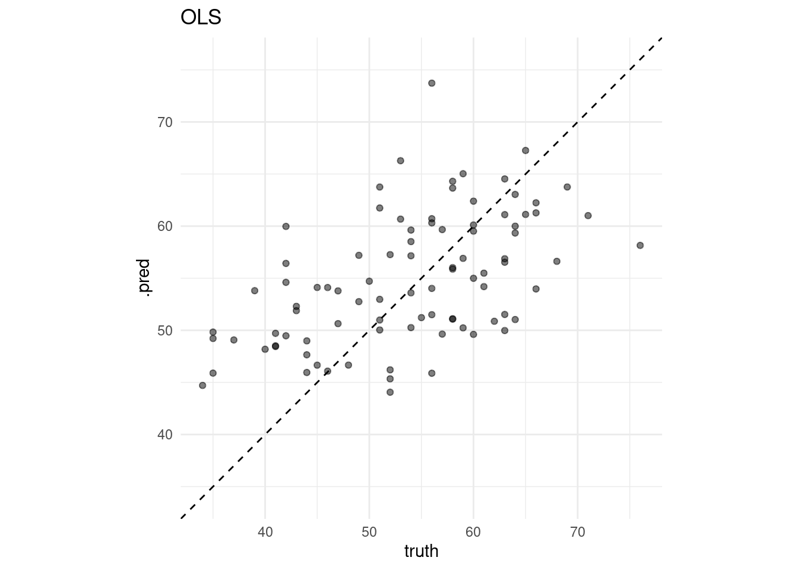
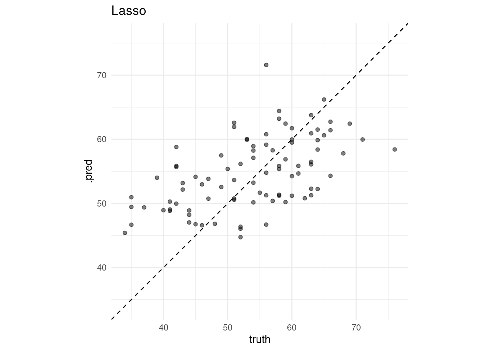
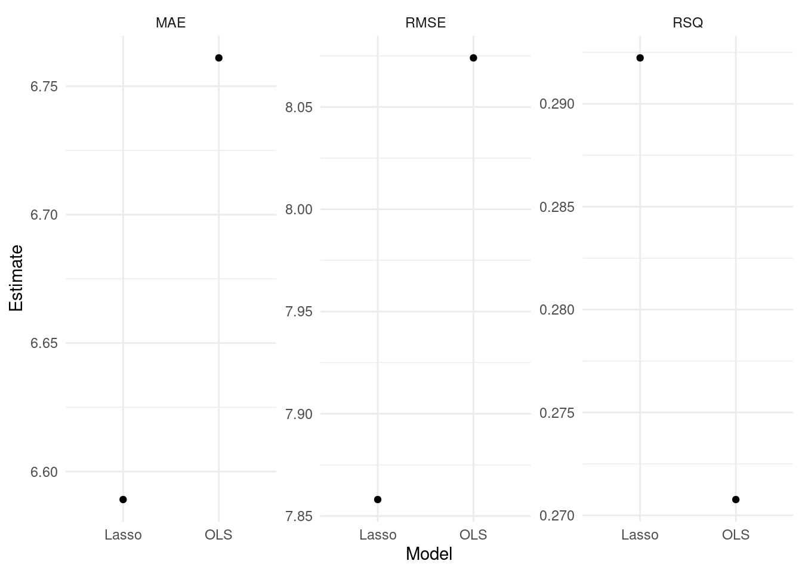
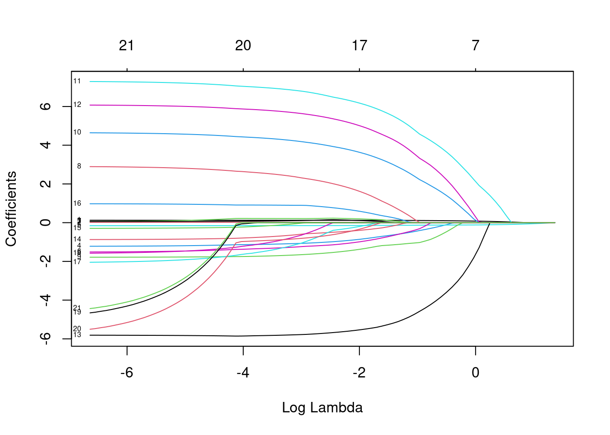
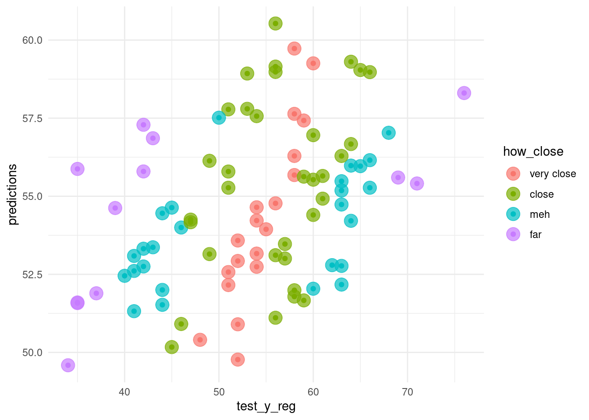

Chapter 4 OLS and lasso
4.1 Load packages
## Loading required package: Matrix## Loaded glmnet 4.0-2## ── Attaching packages ────────## ✓ ggplot2 3.3.2 ✓ purrr 0.3.4
## ✓ tibble 3.0.3 ✓ dplyr 1.0.2
## ✓ tidyr 1.1.2 ✓ stringr 1.4.0
## ✓ readr 1.3.1 ✓ forcats 0.5.0## ── Conflicts ─────────────────
## x tidyr::expand() masks Matrix::expand()
## x dplyr::filter() masks stats::filter()
## x dplyr::lag() masks stats::lag()
## x tidyr::pack() masks Matrix::pack()
## x tidyr::unpack() masks Matrix::unpack()## ── Attaching packages ────────## ✓ broom 0.7.0 ✓ recipes 0.1.13
## ✓ dials 0.0.9 ✓ rsample 0.0.7
## ✓ infer 0.5.3 ✓ tune 0.1.1
## ✓ modeldata 0.0.2 ✓ workflows 0.2.0
## ✓ parsnip 0.1.3 ✓ yardstick 0.0.7## ── Conflicts ─────────────────
## x scales::discard() masks purrr::discard()
## x tidyr::expand() masks Matrix::expand()
## x dplyr::filter() masks stats::filter()
## x recipes::fixed() masks stringr::fixed()
## x dplyr::lag() masks stats::lag()
## x tidyr::pack() masks Matrix::pack()
## x yardstick::spec() masks readr::spec()
## x recipes::step() masks stats::step()
## x tidyr::unpack() masks Matrix::unpack()## here() starts at /home/jae/Machine-Learning-in-R##
## Attaching package: 'glue'## The following object is masked from 'package:dplyr':
##
## collapse##
## Attaching package: 'vip'## The following object is masked from 'package:utils':
##
## vi4.2 Load data
Load train_x_reg, train_y_reg, test_x_reg, and test_y_reg variables we defined in 02-preprocessing.Rmd for the OLS and Lasso regression tasks.
4.3 Overview
LASSO = sets Beta coefficients of unrelated (to Y) predictors to zero
RIDGE = sets Beta coefficients of unrelated (to Y) predictors NEAR ZERO but does not remove them
ELASTICNET = a combination of LASSO and RIDGE
Review “Challenge 0” in the Challenges folder for a useful review of how OLS regression works and see the yhat blog for help interpreting its output.
Linear regression is a useful introduction to machine learning, but in your research you might be faced with warning messages after predict() about the rank of your matrix.
The lasso is useful to try and remove some of the non-associated features from the model. Because glmnet expects a matrix of predictors, use as.matrix to convert it from a data frame to a matrix. (You don’t need to worry about this, if you use tidymodels.)
Be sure to read the glmnet vignette
4.4 Fit and evaluate models
4.4.1 Non-tidy
4.4.1.1 OLS
Below is an refresher of ordinary least squares linear (OLS) regression that predicts age using the other variables as predictors.
# Fit the regression model; lm() will automatically add a temporary intercept column
ols <- lm(train_y_reg ~ ., data = train_x_reg)
# Predict outcome for the test data
ols_predicted <- predict(ols, test_x_reg)
# Root mean-squared error
sqrt(mean((test_y_reg - ols_predicted )^2))## [1] 8.0740114.4.1.2 Lasso
# Fit the lasso model
lasso <- cv.glmnet(x = as.matrix(train_x_reg),
y = train_y_reg,
family = "gaussian",
alpha = 1)
lasso$lambda.min## [1] 0.165423# Predict outcome for the test data
lasso_predicted <- predict(lasso, newx = as.matrix(test_x_reg),
s = 0.1) # Tuning parameter; An arbitrary number not optimized
# Calculate root mean-squared error
sqrt(mean((lasso_predicted - test_y_reg)^2))## [1] 7.8580634.4.2 tidymodels
4.4.2.1 parsnip
- Build models
- Specify a model
- Specify an engine
- Specify a mode
# OLS spec
ols_spec <- linear_reg() %>% # Specify a model
set_engine("lm") %>% # Specify an engine: lm, glmnet, stan, keras, spark
set_mode("regression") # Declare a mode: regression or classification
# Lasso spec
lasso_spec <- linear_reg(penalty = 0.1, # tuning parameter
mixture = 1) %>% # 1 = lasso, 0 = ridge
set_engine("glmnet") %>%
set_mode("regression")
# If you don't understand parsnip arguments
lasso_spec %>% translate() # See the documentation ## Linear Regression Model Specification (regression)
##
## Main Arguments:
## penalty = 0.1
## mixture = 1
##
## Computational engine: glmnet
##
## Model fit template:
## glmnet::glmnet(x = missing_arg(), y = missing_arg(), weights = missing_arg(),
## alpha = 1, family = "gaussian")- Fit models
4.4.2.2 yardstick
- Visualize model fits
# Visualize model fit
visualize_fit <- function(model, names){
# Bind ground truth and predicted values
bind_cols(tibble(truth = test_y_reg), # Ground truth
predict(model, test_x_reg)) %>% # Predicted values
# Visualize the residuals
ggplot(aes(x = truth, y = .pred)) +
# Diagonal line
geom_abline(lty = 2) +
geom_point(alpha = 0.5) +
# Make X- and Y- scale uniform
coord_obs_pred() +
labs(title = glue::glue("{names}"))
}
map2(list(ols_fit, lasso_fit), c("OLS", "Lasso"), visualize_fit) ## [[1]]
##
## [[2]]
- Let’s formally test prediction performance.
Metrics
rmse: Root mean squared error (the smaller the better)mae: Mean absolute error (the smaller the better)rsq: R squared (the larger the better)To learn more about other metrics, check out the yardstick package references.
# Define performance metrics
metrics <- yardstick::metric_set(rmse, mae, rsq)
# Build an evaluation function
evaluate_model <- function(model){
# Bind ground truth and predicted values
bind_cols(tibble(truth = test_y_reg), # Ground truth
predict(model, test_x_reg)) %>% # Predicted values
# Calculate root mean-squared error
metrics(truth = truth, estimate = .pred)
}
# Evaluate many models
evals <- purrr::map(list(ols_fit, lasso_fit), evaluate_model) %>%
reduce(bind_rows) %>%
mutate(type = rep(c("OLS", "Lasso"), each = 3))
# Visualize the test results
evals %>%
ggplot(aes(x = fct_reorder(type, .estimate), y = .estimate)) +
geom_point() +
labs(x = "Model",
y = "Estimate") +
facet_wrap(~glue("{toupper(.metric)}"), scales = "free_y") 
- For more information, read Tidy Modeling with R by Max Kuhn and Julia Silge.
4.5 Tuning lasso parameters
4.5.1 tune ingredients
# tune() = placeholder
tune_spec <- linear_reg(penalty = tune(), # tuning parameter
mixture = 1) %>% # 1 = lasso, 0 = ridge
set_engine("glmnet") %>%
set_mode("regression")
tune_spec## Linear Regression Model Specification (regression)
##
## Main Arguments:
## penalty = tune()
## mixture = 1
##
## Computational engine: glmnet# penalty() searches 50 possible combinations
lambda_grid <- grid_regular(penalty(), levels = 50)
lambda_grid## # A tibble: 50 x 1
## penalty
## <dbl>
## 1 1.00e-10
## 2 1.60e-10
## 3 2.56e-10
## 4 4.09e-10
## 5 6.55e-10
## 6 1.05e- 9
## 7 1.68e- 9
## 8 2.68e- 9
## 9 4.29e- 9
## 10 6.87e- 9
## # … with 40 more rows4.5.2 Add these elements to a workflow
4.5.3 Visualize
- Visualize the distribution of log(lambda) vs mean-squared error.
# Visualize
rec_res %>%
collect_metrics() %>%
ggplot(aes(penalty, mean, col = .metric)) +
geom_errorbar(aes(
ymin = mean - std_err,
ymax = mean + std_err
),
alpha = 0.3
) +
geom_line(size = 2) +
scale_x_log10() +
labs(x = "log(lambda)") +
facet_wrap(~glue("{toupper(.metric)}"),
scales = "free",
nrow = 2) +
theme(legend.position = "none")
NOTE: when log(lambda) is equal to 0 that means lambda is equal to 1. In this graph, the far right side is overpenalized, as the model is emphasizing the beta coefficients being small. As log(lambda) becomes increasingly negative, lambda is correspondingly closer to zero and we are approaching the OLS solution.
- Show the lambda that results in the minimum estimated mean-squared error (MSE):
top_rmse <- show_best(rec_res, metric = "rmse")
best_rmse <- select_best(rec_res, metric = "rmse")
glue('The RMSE of the intiail model is
{evals %>%
filter(type == "Lasso", .metric == "rmse") %>%
select(.estimate) %>%
round(2)}')## The RMSE of the intiail model is
## 7.86glue('The RMSE of the tuned model is {rec_res %>%
collect_metrics() %>%
filter(.metric == "rmse") %>%
arrange(mean) %>%
slice(1) %>%
select(mean) %>%
round(2)}')## The RMSE of the tuned model is 7.71- Finalize your workflow and visualize variable importance
finaliz_lasso <- rec_wf %>%
finalize_workflow(best_rmse)
finaliz_lasso %>%
fit(train_x_reg %>% bind_cols(tibble(age = train_y_reg))) %>%
pull_workflow_fit() %>%
vip::vip()